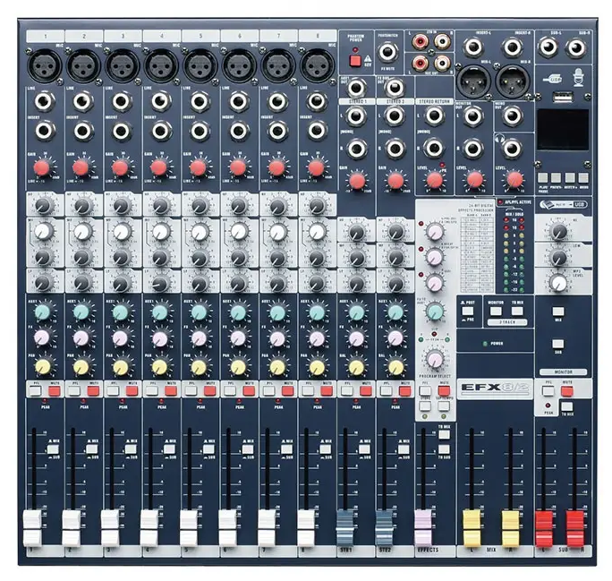

Hardware, grabación en directo y postproducción sonora.
🎙️🎛️
1. El Estudio de Radio (Hardware y Conexiones)
Para grabar un podcast profesional en directo, no basta con un micrófono USB. Necesitamos centralizar todas las entradas y salidas en una Mesa de Mezclas.
Croquis de Conexión del Estudio
🎙️ 4 Micrófonos
Cables XLR (Canon) a Canales 1-4
💻 Salida Audio PC
Cable Minijack a doble Jack 6.3mm

Mesa de Mezclas
Procesa, ecualiza y suma todas las señales de audio en una sola mezcla estéreo.
🎧 Audacity (PC)
Recibe la mezcla final por USB
Los Micrófonos (Phantom Power): Usamos cables XLR (Canon). Como son micrófonos de condensador de alta calidad, necesitan energía eléctrica para funcionar. La mesa tiene un botón general llamado Phantom Power (48V) que envía corriente a los micros por el propio cable de audio. ¡Sin este botón encendido, no graban nada!
Entrada de efectos (Canal 8): La salida de auriculares del ordenador se conecta con un cable Minijack a doble Jack 6.3mm a un canal estéreo (ej. 7/8) de la mesa. Por aquí entrará la música y los aplausos.
Salida de grabación (USB): La mesa envía todo el batiburrillo sonoro ya mezclado por un cable digital USB de vuelta al ordenador. Ese cable USB es el que seleccionamos como "Micrófono" dentro del programa Audacity para grabarlo.
🔌 Tipos de cables del Estudio
Es vital que sepáis identificar qué cable va en cada agujero de la mesa para no romper ningún pin:
Cable XLR (Canon)
Tiene 3 pines. Es el cable balanceado profesional que usamos para los Micrófonos. Permite enviar la corriente Phantom (48V).
Minijack a Doble Jack
El extremo pequeño (Minijack estéreo) va a la salida de auriculares del PC. Los dos extremos grandes (Jacks 6.3mm) van a las estradas L y R del canal estéreo de la mesa.
Jack 6.3mm (1/4")
El clásico "Jack gordo" de toda la vida. Lo utilizamos en la salida frontal de la mesa para enchufar nuestros auriculares.
2. Anatomía de la Mesa de Mezclas del Instituto
Nuestra mesa analógica profesional tiene muchísimas ruletas y botones, pero nos centraremos en los controles vitales del panel frontal. Cada canal por el que entra un micrófono tiene una tira vertical de controles. De arriba abajo, estos son los más importantes:
> SISTEMA LISTO. Haz clic y arrastra el fader, gira las ruletas o pulsa los botones de la mesa...
CH 1 (MIC)
GAIN
EQ HI
EQ LOW
MUTE
PFL
+10
0
-∞
FADER
🔴 Alimentación Phantom (48V):(Botón global en la parte superior derecha). Este botón es crítico. Los micrófonos de condensador profesionales del estudio no funcionan por sí solos; necesitan recibir +48 voltios de corriente continua a través del propio cable de audio XLR. ¡Asegúrate siempre de tener todos los faders al mínimo antes de encenderlo o apagarlo para evitar un "petardazo" en los altavoces!
🎛️ Ganancia (Gain): Es la primera ruleta superior del canal. Ajusta la sensibilidad de entrada. Principio fundamental: Si la ganancia es muy baja, se colará ruido de fondo al intentar subir el volumen; si es demasiado alta, la señal saturará y el audio quedará distorsionado para siempre (clipping rojo).
🎧 PFL (Pre-Fade Listen): Si un locutor tiene el fader bajado y pulsamos PFL, la mesa enviará el audio de ese canal a la salida "Control Room" (los auriculares del técnico) antes de pasar por el fader. Sirve para probar cómo suena un micro sin que salga al aire.
🔇 Mute (Silenciar): Un botón rojo que corta todas las salidas del canal de inmediato. Muy útil si el invitado empieza a toser o mover papeles.
🎚️ Fader de canal: El potenciómetro deslizante inferior. Este NO sirve para solucionar problemas de sensibilidad de entrada (eso lo hace la Ganancia), este sirve simplemente para mezclar. Controla de forma suave cuánto sonido enviamos a la grabación final.
📚 Documentación Oficial de la Mesa
Consulta el manual completo en PDF para ver detalles avanzados (subcanal USB, sección Máster y efectos Lexicon).
Un podcast en directo no se puede improvisar. El éxito depende al 90% de lo preparado que esté el equipo antes de darle al REC.
📻 Herramienta Recomendada: Radioescaleta
Para ayudaros a preparar el programa de radio, usaremos Radioescaleta, una herramienta web diseñada específicamente para los centros educativos.
Cálculo de Tiempos: Escribes el guión y la web estima automáticamente cuánto tardaréis en leerlo (unas 130 palabras por minuto).
Botonera de Sonidos: Permite al técnico lanzar sintonías, cortinillas y efectos desde la misma aplicación con un solo clic.
Modo Directo: Su cronómetro en vivo resalta qué bloque debería estar sonando en cada instante para que nunca os perdáis durante la grabación.
La Escaleta y la Tableta de Sonidos
Todo el equipo debe tener delante una escaleta de tiempos indicando en qué minuto y segundo exacto habla cada persona y qué efecto de sonido debe sonar.
El técnico del ordenador (conectado al Canal 8) debe tener todos los cortes de música, ráfagas, risas y aplausos perfectamente localizados y cargados en una Tableta de Sonidos (Soundboard) para poder lanzarlos con un solo clic.
4. Postproducción en Audacity: La Magia de la Edición
Aunque hayáis hecho un directo casi perfecto usando bien los faders de la mesa, el archivo de audio "en crudo" que graba Audacity siempre necesita un pulido final antes de publicarse. A esta fase la llamamos Postproducción.
Pista 1: Locutor
Silencio
Solo
Volumen:
Pista 2: Sintonía (Estéreo)
Silencio
Solo
Volumen:
Ejemplo de interfaz multipista: Una pista Mono para la voz (azul) y una pista Estéreo para la música de fondo (verde con dos canales).
Herramientas Básicas de Edición
✂️ Cortar y Pegar: Selecciona con el ratón los silencios largos, los tartamudeos o los errores y pulsa Suprimir para borrarlos. Puedes mover los clips de audio libremente en la línea de tiempo para ajustar los ritmos.
📉 Herramienta Envolvente (Ducking): Permite poner nodos en una pista de música de fondo para bajarle el volumen manualmente justo cuando los locutores empiezan a hablar, y volvérselo a subir en los silencios.
Identificando Ondas de Audio Visualmente
Onda Saturada (Clipping)
El volumen entró tan fuerte que la onda "choca" contra los bordes, rompiendo los picos. El audio sonará distorsionado y roto. ¡No se puede arreglar en postproducción!
Onda Normalizada
La onda es sana y dinámica. Ocupa aproximadamente un 80-90% del espacio vertical pero sin tocar jamás los bordes. Volumen potente y limpio.
Demasiado Bajo
Apenas es una línea temblorosa en el centro. Si aplicamos normalización en postproducción para que se escuche, multiplicaremos el ruido de fondo (siseo).
Efectos Clave para limpiar el Audio
Selecciona toda la pista de audio (Ctrl+A) y aplica los siguientes efectos desde el menú superior Efecto:
1. Reducción de Ruido: El proceso tiene dos pasos. Primero, seleccionas un par de segundos donde no hable nadie (solo se escuche el zumbido de la clase o del PC) y le das a "Obtener perfil de ruido". Luego seleccionas TODO el audio, vuelves al efecto y le das a "Aceptar". ¡Audacity restará ese zumbido de toda la pista dejando la voz limpia!
2. Compresor / Normalización: Sirve para igualar el volumen. Si alguien habló muy bajo y otro gritó, esto sube los picos bajos y baja los altos, logrando que todo el podcast suene uniforme y potente.
3. Ecualización Gráfica: Puedes realzar un poco los graves (Bass Boost) para que vuestras voces suenen más profundas y profesionales, al estilo locutor de radio.
Exportar a MP3 (El paso final)
Cuando guardas tu trabajo (Archivo > Guardar proyecto), Audacity crea un archivo .aup3. ¡Ojo! Ese archivo NO es un archivo de audio, es el archivo de trabajo del programa y no se puede subir a iVoox ni reproducir en el móvil.
Para crear el archivo de audio final que se subirá a internet, debes ir a Archivo > Exportar > Exportar como MP3.
Formato MP3: Es el estándar de internet. Comprime el tamaño del archivo un 90% perdiendo muy poca calidad, lo que permite a los oyentes descargarlo rápido en sus móviles.
Calidad (Bitrate): Te pedirá elegir la calidad. Para un podcast hablado, una calidad constante de 128 kbps o 192 kbps es más que suficiente y dará como resultado un archivo ligero y perfecto para subir a plataformas.
4. Diseño Gráfico Profesional (GIMP)
Tratamiento de imagen, color, capas y la revolución de la IA generativa.
🖌️🎨
1. El Tamaño y la Resolución: Evita el desastre
Antes de abrir siquiera una imagen, debes tomar la decisión más importante como diseñador gráfico: ¿Dónde se va a ver tu diseño?
PPI (Píxeles Por Pulgada)
Es la densidad de puntos que tiene una imagen. Si te equivocas aquí, arruinarás el trabajo:
🌐 Para Pantalla / Redes Sociales (72 ppi): Los monitores y móviles no necesitan más densidad. A 72 ppi el archivo pesará pocos kilobytes y cargará rapidísimo en tu web.
🖨️ Para Impresión / Cartelería (300 ppi): El papel exige muchísima calidad. Si diseñas un póster A4 a 72 ppi y lo envías a la imprenta, saldrá "pixelado" (borroso y lleno de cuadrados). Siempre debes crear un lienzo nuevo a 300 ppi.
2. La Teoría del Color: Pantalla vs Papel
¿Alguna vez has diseñado algo con colores neón brutales en el ordenador y, al imprimirlo, se veía apagado y grisáceo? Es culpa del modo de color.
RGB (Luz / Pantallas)
Se suman luces. La mezcla de todos crea el BLANCO.
CMYK (Tinta / Imprenta)
Se suma tinta. La mezcla de todos crea el NEGRO.
GIMP trabaja internamente en RGB (Rojo, Verde, Azul). Las impresoras usan CMYK (Cian, Magenta, Amarillo, Negro). El papel no tiene luz propia, por lo que nunca podrá reproducir colores tan brillantes como tu monitor LED.
Representación matemática tridimensional: El cubo RGB y CMYK.
3. Herramientas Clave de Edición en GIMP
🛠️ El Panel de Herramientas
A dominar el editor se aprende practicando. Estas son las funciones vitales para crear vuestra cartelería:
📚 Las Capas (Layers)
El concepto más importante. Piensa en las capas como láminas de cristal apiladas. El fondo va abajo, luego pones una imagen recortada encima, y arriba del todo el texto. Si borras algo en la capa superior, no afectará a las de abajo.
✂️ Recorte (Crop Tool)
Sirve para reencuadrar una fotografía eliminando lo que sobra de los bordes. Seleccionas el área que quieres mantener, pulsas Intro y el resto desaparece. Atención: Es destructivo, recortará todas las capas a la vez.
🩹 Tampón de Clonar
¿Hay una mancha, un grano o una papelera arruinando la foto? Con el tampón pulsas Ctrl + Clic en una zona "limpia" para copiar esa textura, y luego "pintas" sobre la mancha. Estarás copiando píxeles de un sitio a otro.
A Texto (Tipografía)
Crea automáticamente una capa nueva exclusiva para las letras. Puedes cambiar la fuente, tamaño, espaciado y color. Como es una capa independiente, siempre podrás moverla por encima de las imágenes sin mezclarse.
🤖 4. La Nueva Era: Edición con Inteligencia Artificial
La industria del diseño gráfico ha cambiado para siempre. Programas como Photoshop y diversas webs ya integran IA generativa para editar imágenes. Como futuros creadores, debéis dominar estas técnicas:
Relleno Generativo (Inpainting): Seleccionas un objeto de la foto (un coche de fondo) y le pides a la IA que lo borre. En lugar de dejar un hueco en blanco, la IA "inventa" y pinta el fondo que habría detrás manteniendo la iluminación exacta.
Expansión de Imagen (Outpainting): Tienes una foto cuadrada y necesitas que sea horizontal para un póster. La IA puede "imaginar" y dibujar qué hay más allá de los bordes originales, ampliando el paisaje de forma realista.
Upscaling Generativo: Antiguamente, si ampliabas una foto pequeña, se pixelaba. Ahora, la IA puede ampliar una imagen minúscula y "redibujar" los píxeles faltantes, creando nitidez de alta resolución (HD) donde antes había borrones.
*Pregunta al profesor por herramientas como DALL-E, Midjourney o Stable Diffusion para generar vuestros propios fondos.
7. Propiedad Intelectual y Creative Commons
Derechos de autor, Copyleft y la cultura libre en internet.
Los derechos patrimoniales (cobrar por una obra) expiran con el tiempo. En España, 70 u 80 años después de la muerte del autor, sus obras pasan al Dominio Público. Esto significa que hoy puedes grabar un disco tocando a Beethoven y venderlo sin pagarle nada a nadie.
2. Creative Commons (Copyleft)
Imagina que haces una foto increíble y quieres que la gente la use gratis, pero con la condición de que digan que es tuya. ¿Tienes que firmarles un contrato a cada uno? No. Para eso nacieron las licencias Creative Commons (CC). Son plantillas legales que otorgan permisos por adelantado basándose en 4 iconos:
Atribución (BY)
Obligatorio. Cualquiera puede usar tu obra, pero tienen que citar tu nombre y enlazar a la obra original.
Compartir Igual (SA - Share Alike)
El "virus" del software libre. Si alguien coge tu obra y la modifica para hacer otra cosa, están obligados a publicar esa nueva obra bajo la misma licencia exacta que la tuya. No pueden cerrarla con Copyright.
No Comercial (NC)
Te dejo usar mi música gratis en tu vídeo de YouTube... siempre y cuando tu vídeo no esté monetizado. Nadie puede ganar dinero usando tu obra sin pagar primero.
Sin Obras Derivadas (ND - No Derivatives)
Puedes imprimir mi foto o compartirla intacta, pero no puedes retocarla, cortarla ni meterle filtros. Úsala tal y como yo la creé, o no la uses.
Combinando licencias (Ejemplos)
CC BY: La licencia más libre. Úsala para lo que quieras, incluso véndela, pero nombra al autor.
CC BY-NC-SA: Cítame, no ganes dinero con ella, y si haces un remix, distribúyelo con esta misma licencia (muy típica en Wikipedia).
CC0 (Creative Commons Zero): Renuncia absoluta de derechos. El autor entrega su obra directamente al Dominio Público.
3. El Derecho de Cita (Fair Use)
¿Por qué los youtubers pueden poner trozos de películas comerciales sin que les borren el vídeo? Existe una excepción a la Ley de Propiedad Intelectual llamada Derecho de Cita.
Puedes incluir fragmentos cortos de obras con Copyright cerrado en tus propios trabajos siempre que cumplas TRES condiciones:
Que la obra original ya haya sido divulgada al público.
Que tu uso sea únicamente para fines docentes, o para hacer análisis, comentario o crítica periodística. (Si pones una canción de Rosalía de fondo en tu podcast solo porque "queda chula", es ilegal. Si la pones para analizar críticamente cómo usa los sintetizadores, es legal).
Que el fragmento sea corto y proporcional (no puedes subir la película entera para criticar una escena).